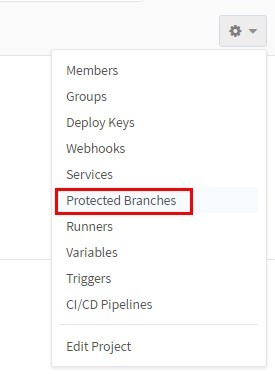
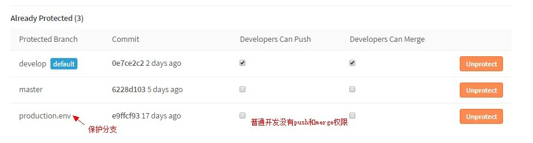
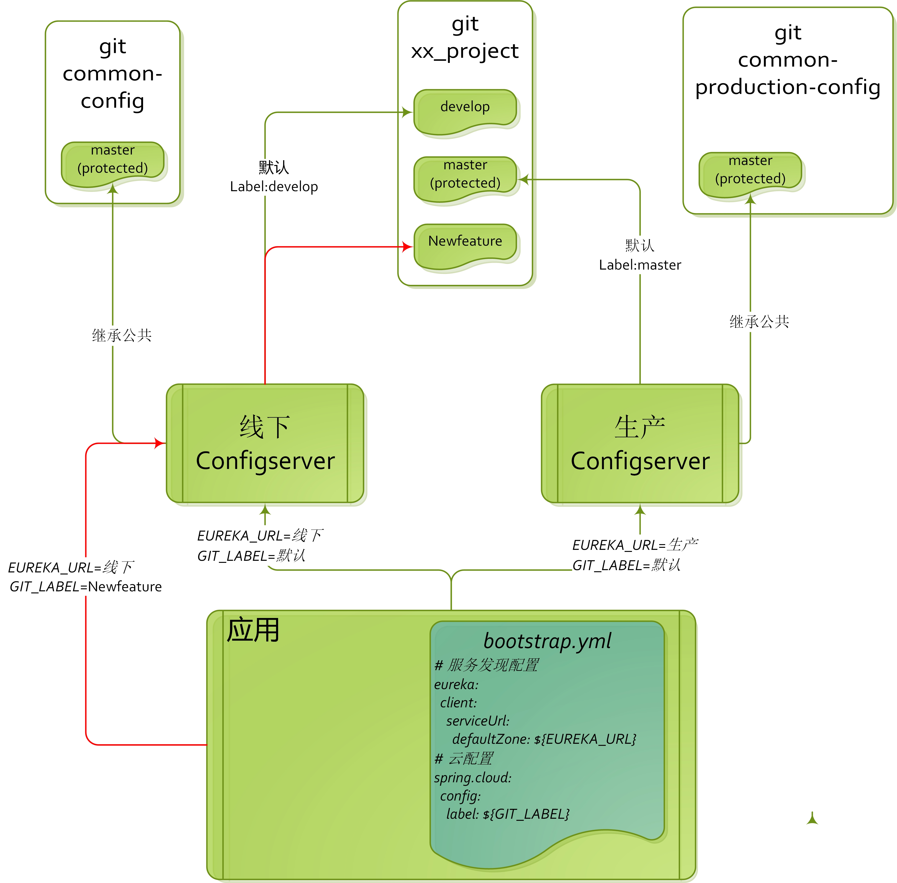

关于configserver的安全机制
权限管理
git存储配置,权限角色依赖gitlab权限
| 配置git库权限 | gitlab权限 | 公司角色 |
|---|---|---|
| 查看者 | Guest/Reporter | QA/测试 |
| 修改者 | Developer | 开发人员 |
| 上线管理者 | Master | 技术经理/运维 |
| configserver管理者 | Owner | 基础架构组管理 |
配置查看者
- 可查看代码的配置项
- 发现配置问题,可提出issue
- 由于敏感信息已经加密,所以无法看到明文,保证安全
配置修改者
- 开发人员在非保护分支(非master)自由修改配置,线下充分测试后提交
- 根据需求,创建不同分支并行开发
- 发起保护分支的merge请求
上线管理者
- 线上发布的是受保护分支(production.env),主动修改后push配置,配置生效
- 同意开发的merge请求,配置生效
- 添加其他成员
configserver管理者
- 检查项目名称
- 创建git项目,指定受保护分支(默认master,可增加预发布分支)
- 分配管理权限,指定"上线管理者"
如何配置git权限
gitlab选择保护分支

选择需要保护的分支

配置成功后显示

环境结构参考
